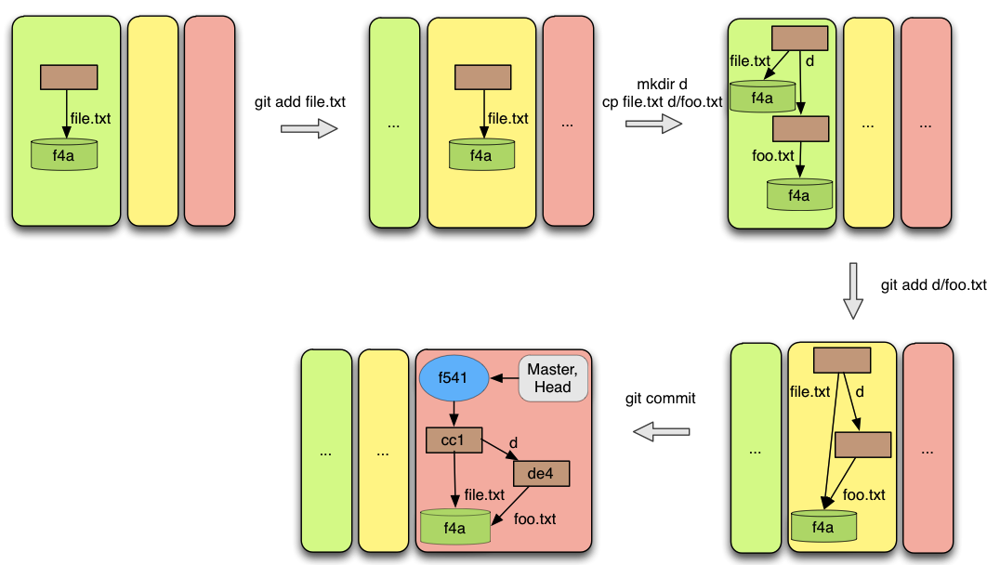
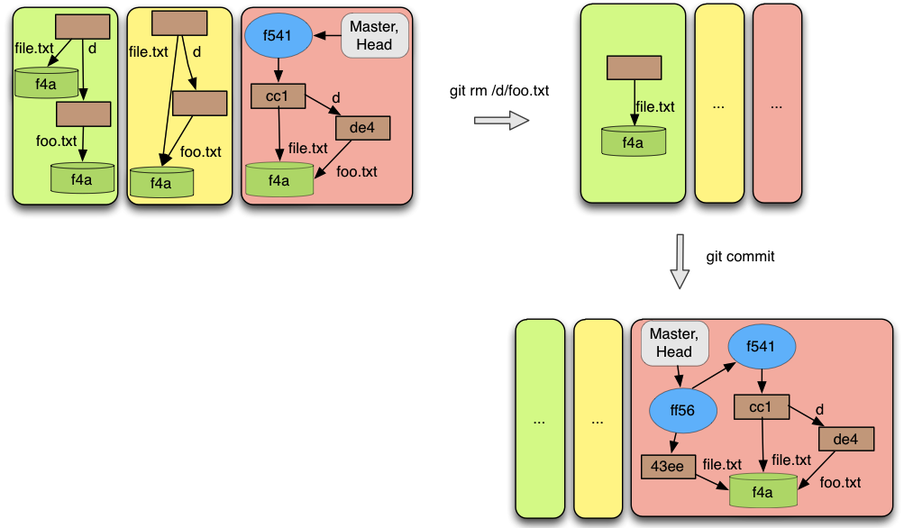

Description
The commit operation takes the current index and builds a commit object. Basically it takes the files from the index, builds a structure using trees and blobs objects and creates a new commit object pointing to the tree that corresponds to the project’s root directory. This commit object will have as parent the current commit, the commit pointed by the branch indicated in the HEAD. When the first commit is created, a branch called "master" will be created and it will be marked as the current branch, or in other words, it will be indicated by HEAD. Also, the first commit of the repository is called a Root Commit, because it has no parents.
Pre-conditions
There are three pre-conditions that are required to perform this operation:
The index is not empty;
The commit object that will be created is different from the current commit;
There are not unmerged files.
The first pre-condition is obvious, because if we do not have files in the index, there is not anything to commit.
The second condition says basically that we cannot have two commits objects pointing to the same tree object in a row, or in other words, if we have the same files and the same content in the index and in the current commit, a commit operation cannot be performed.
The last condition just says that it is not possible to perform a commit, if there are unmerged files in index. As we have said before, we will speak about this later.
Result
The result of performing a commit can be different if it is the first commit or if there are already some commits in th repository. We start by exposing the observed result when the first commit is being performed and then we show the case when there is already some commit in the repository.
In the end we show some properties that are observed in both cases. The first commit object that is being created is a commit with no parent. There cannot be branches at this moment, because they cannot point to any commit, as there are none to be pointed, so a new branch called "master" is created. This branch is going to point to the commit that has been created. Also the HEAD, that previously was not defined will identify this "master" branch.
When there are already some commits in the repository, then it is guaranteed that there is at least one branch and the HEAD is identifying some existing branch. The branch that is identified by the HEAD, is pointing now to the commit created. This commit have now as parent the previous commit (the commit that was previously pointed by the branch identified by HEAD), unless it is a result from a merge. In this case the commit must have two parents: the previous commit and the branch that is being merged.
The common properties that are observed are that all the files and content that were in the index, are now in the current commit with the structure from the file system. For this new blobs and trees were probably created. The index keeps exactly the same content.
Examples
The figure 8 shows a typical process where two files are added to the index and then a commit is performed. It can be seen that the new commit reflects the working directory’s structure with these two files. The interesting point is that, because these two files have the same content, they will share the same Blob. This is a case where Git shows its efficiency. The previous commit illustrates the case in which the first commit of the repository is being performed.
 Figure 8
In Figure 9 it is possible to see an example of a commit operation, in which the only difference from the previous commit is a removed file. This figure is interesting because it shows which changes are made in the repository when a new (non root) commit is created. The new commit points to the previous commit and the branch (which is identified by HEAD) points to the just created commit. As expected the new commit reflects the working directory’s structure for the existing files.
 Figure 9
Figure 10 is just a concrete example of the second pre requisite referred above. In this case the commit cannot be performed.
Figure 10